John Parker Glick (1938–2017) was one of the most influential studio potters in American ceramics. He established Plum Tree Pottery in Farmington Hills, Michigan in 1964, shortly after completing his MFA at Cranbrook Academy of Art. For over five decades, Plum Tree was both a working production studio and a training ground for the next generation of potters.
Glick was known for his inventive approach to functional stoneware — layered glazes, bold geometric patterns, and forms that balanced utility with visual complexity. His work is held in numerous museum collections including the Smithsonian American Art Museum, the Detroit Institute of Arts, and the Victoria and Albert Museum in London.
Beyond his own output, Glick was devoted to the broader ceramics community. He wrote candidly about the practical realities of running a studio, contributed to The Studio Potter journal, and mentored dozens of young potters through apprenticeships at Plum Tree.
 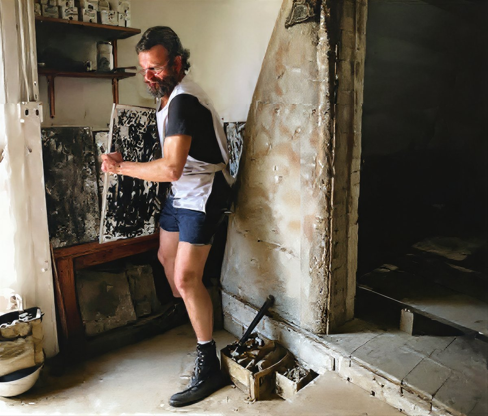
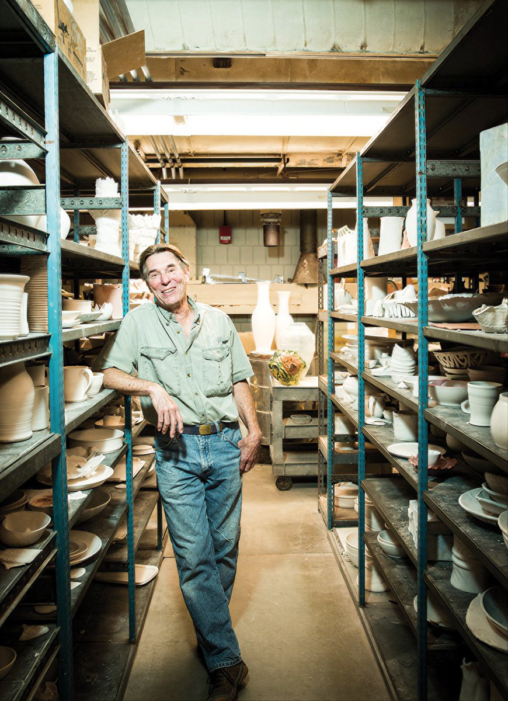
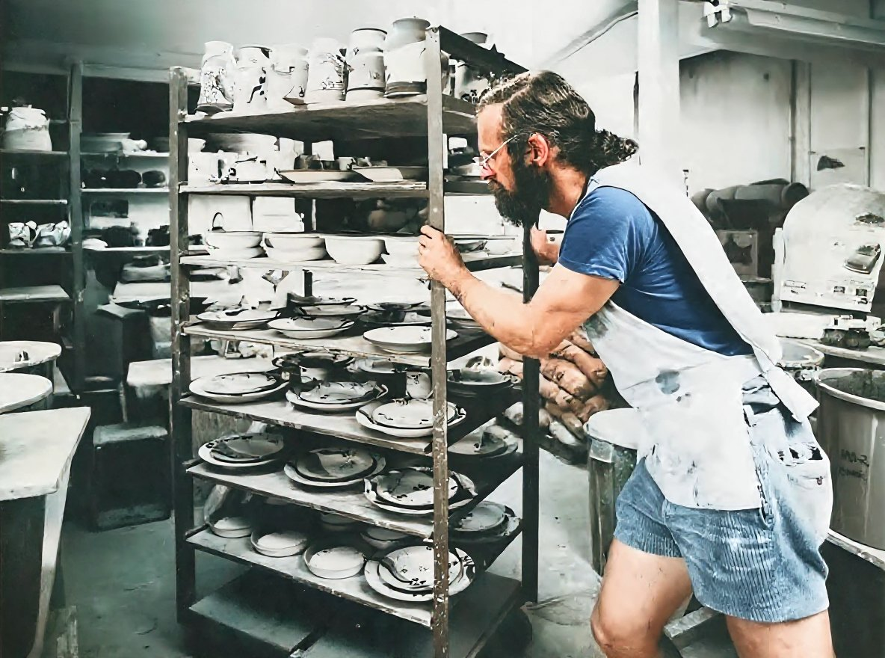
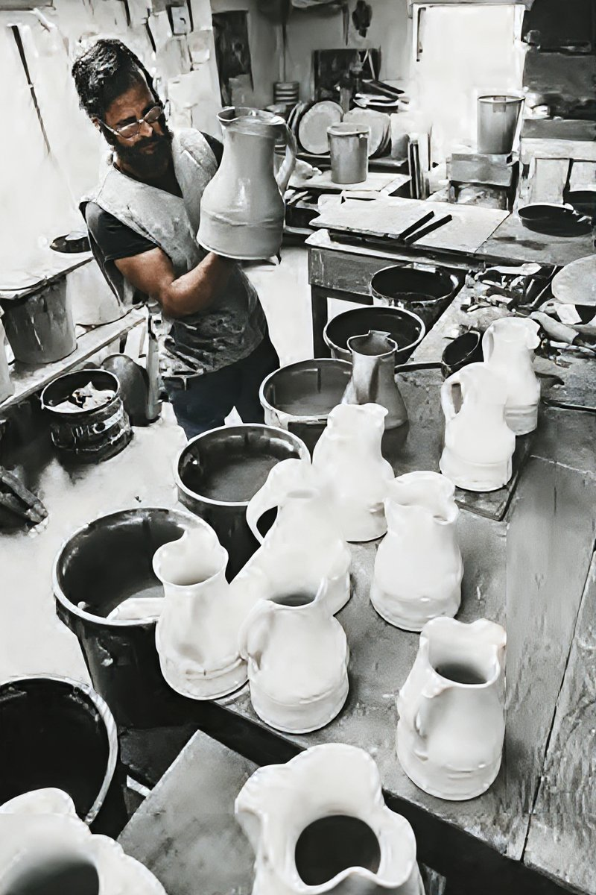
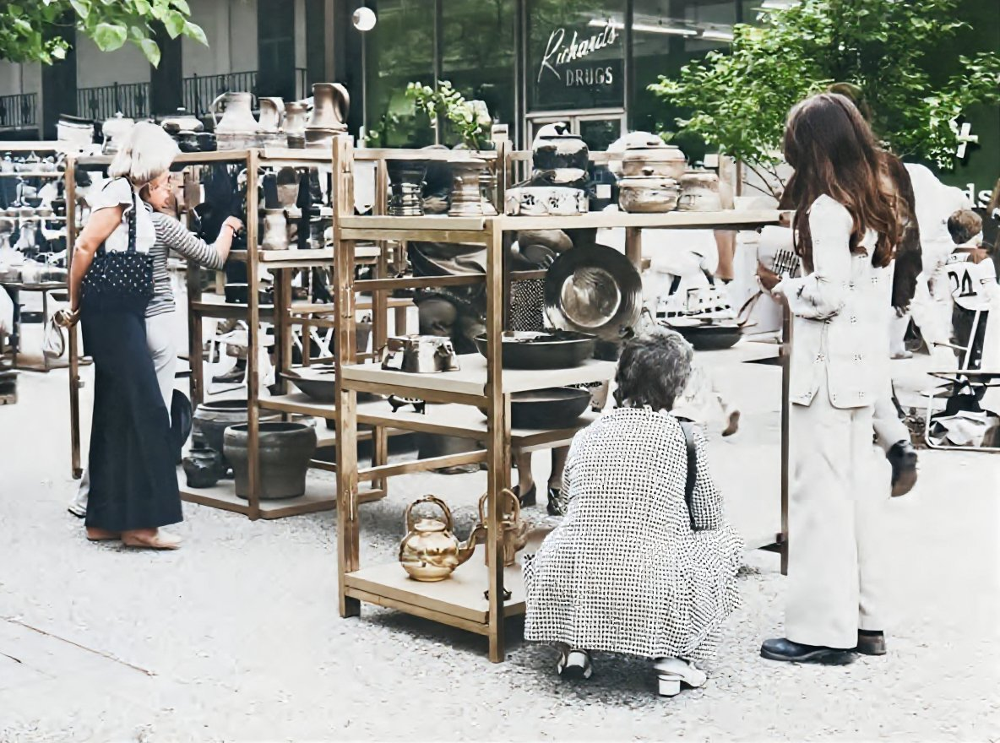
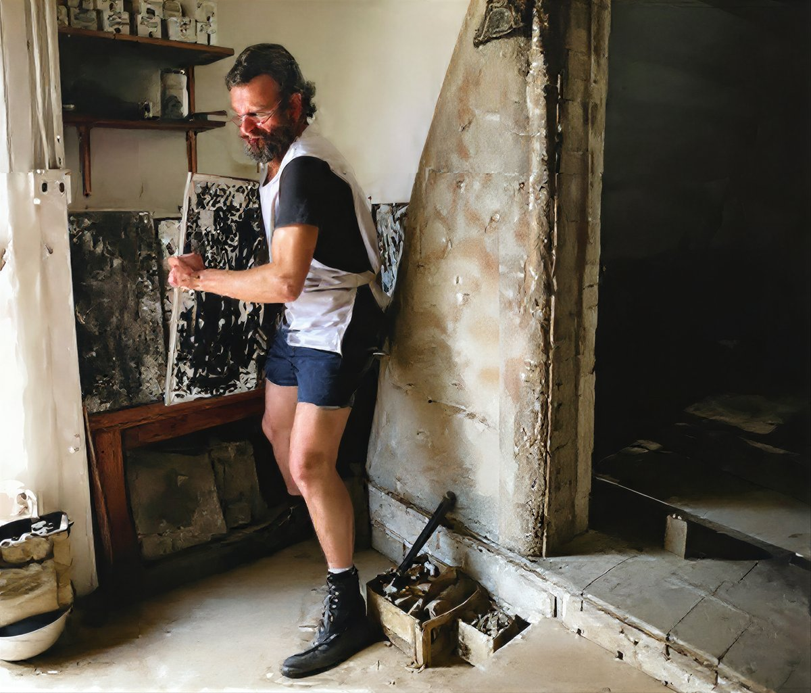
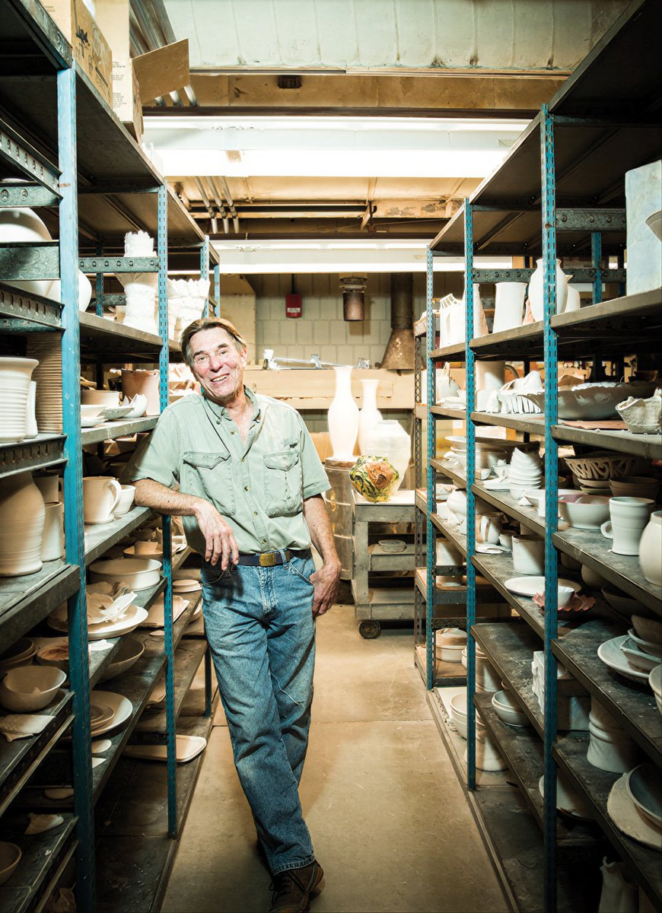
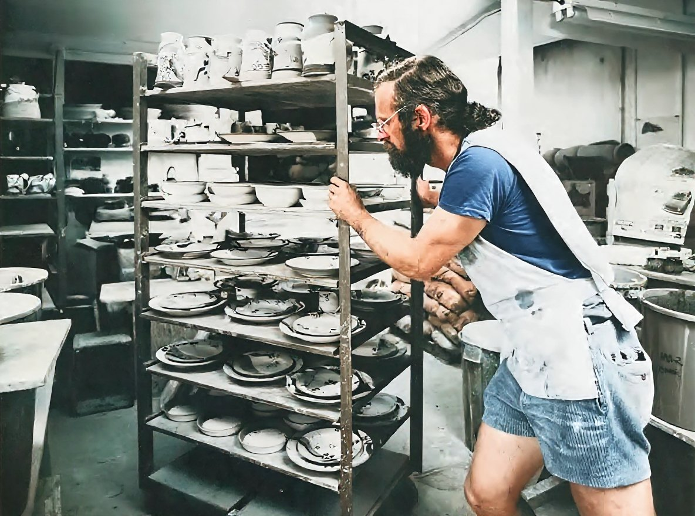
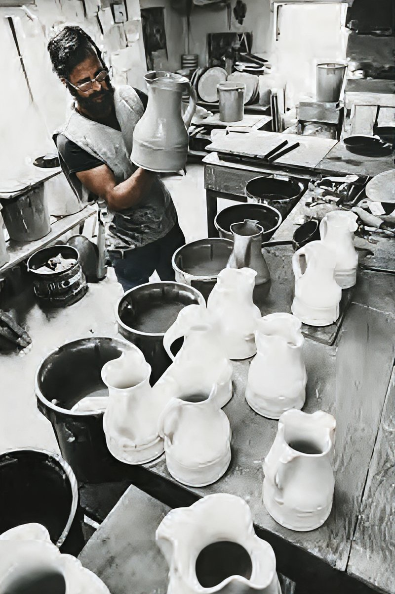
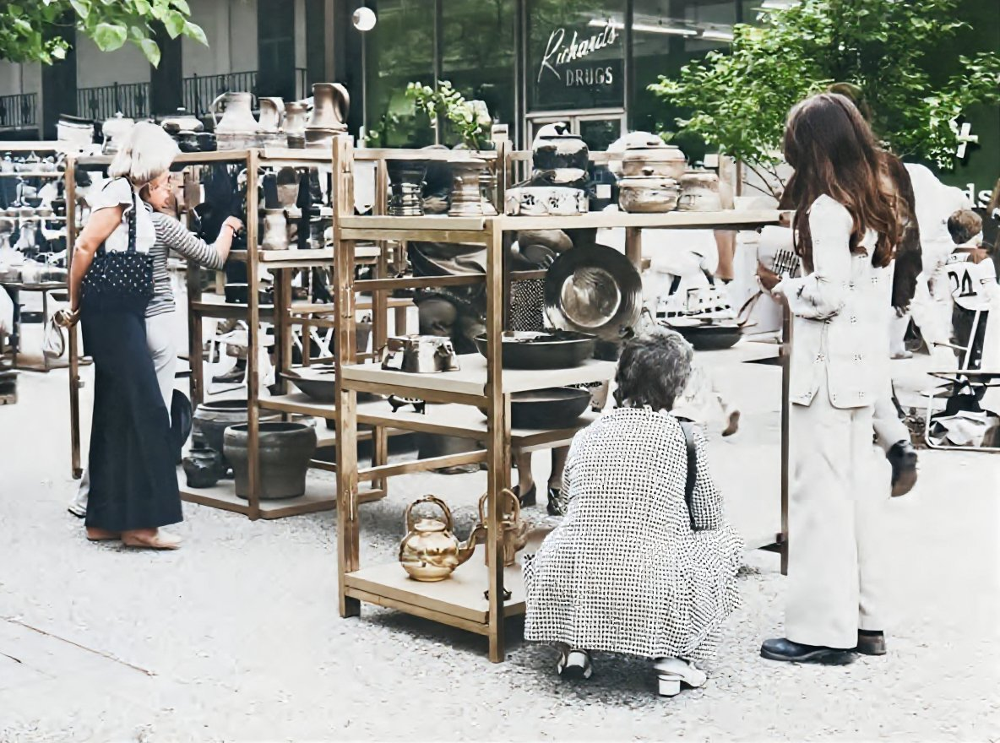
 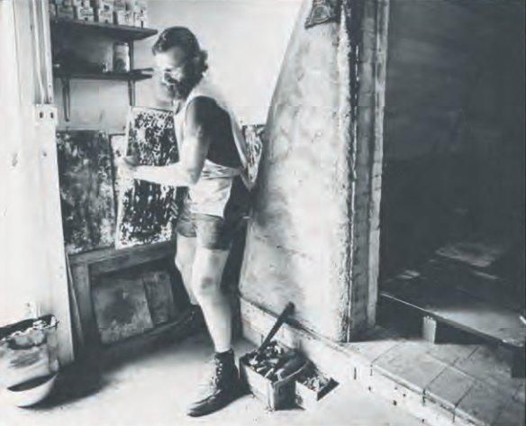
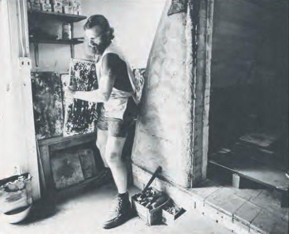